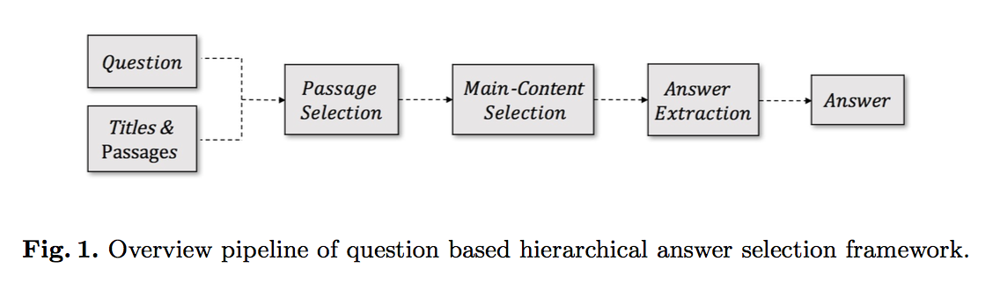
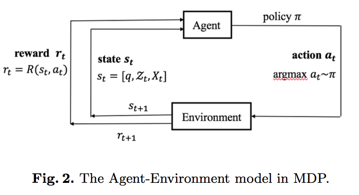

Hierarchical answer selection framework for Multi-passage Machine Reading Comprehension
Problem
Recent researches in answer extraction on single passage formulate Machine Reading Comprehension(MRC) task as predicting the start and end positions of the answer in the passage. However, they are not strong enough when considering the real web data, which have more than one passage and multiple answer spans, such as DuReader.
Inspiration
To handle these complex MRC tasks, I begin to thinking that how to tackle this complex daze. After a long-time contemplation, a spark come to my mind, that is, MRC process can be formulate as the normal people’s reading process. When I doing my GRE Reading test, I need to read the whole passage to find some special texts that contain the answer. And then I will find the answers in these Main Content. My MRC model can be something like this. Thus, combined with Reinforcement learning and the state-of-the-art answer extraction method, this MRC framework is implemented.

Main Work
The general framework of this model is demonstrated in Figure 1, which consists of one encoding module and other three function modules. Specifically, the encoding module employs the Bi-Directional Attention mechanism to obtain a question-aware word representation.
And then three other modules are implemented:
- First, passage selection layer first use the passage title and content information to predicted which passage will be selected;
- Second, a main content selection module is modeled by Markov-Decision-Process(MDP Figure 2) and trained by policy gradient to predict a sequence of key sentences, which is called Main Content in our approach.
main content selection module is modeled by MDP and trained by policy gradient

- Finally, a Match-LSTM method is employed to obtain the final answer from the Main Content.
Conclusion
- We formulate the candidate answer selection model as a MDP process, which performs well in large search engine dataset.
- We first use the title of passage to filter the passages, which is a complement for passage representation.
- We propose a real world MRC pipeline based on these modules, which can tackle the redundant information problems.
Date
Paper